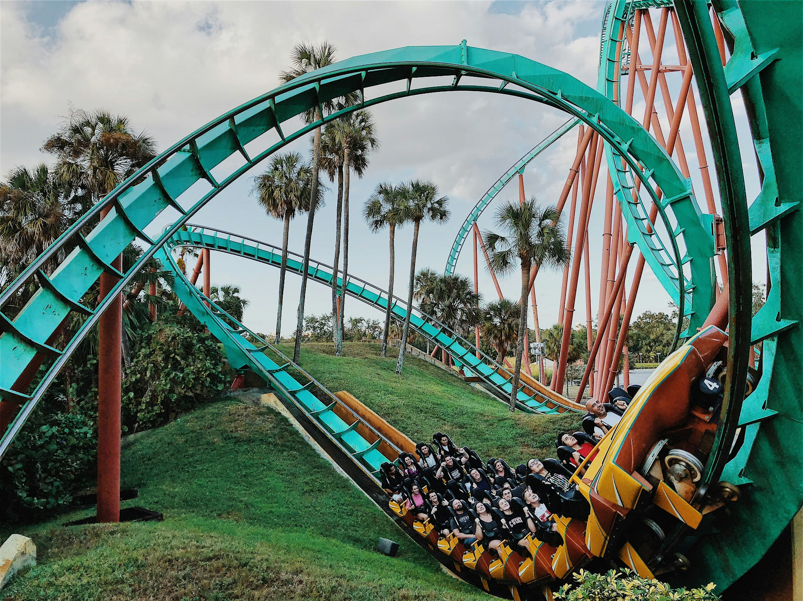
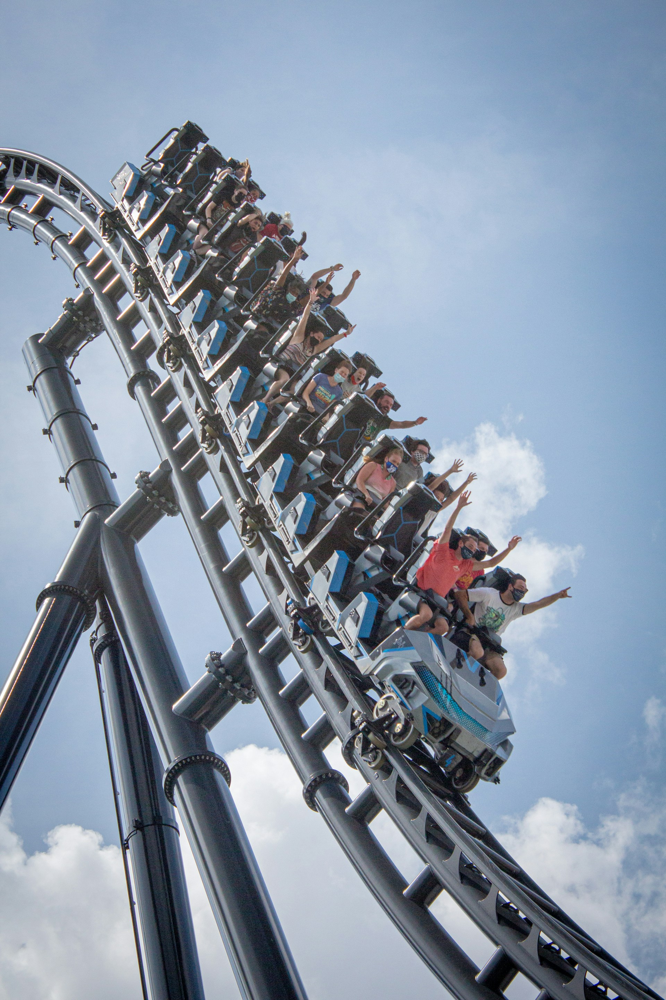
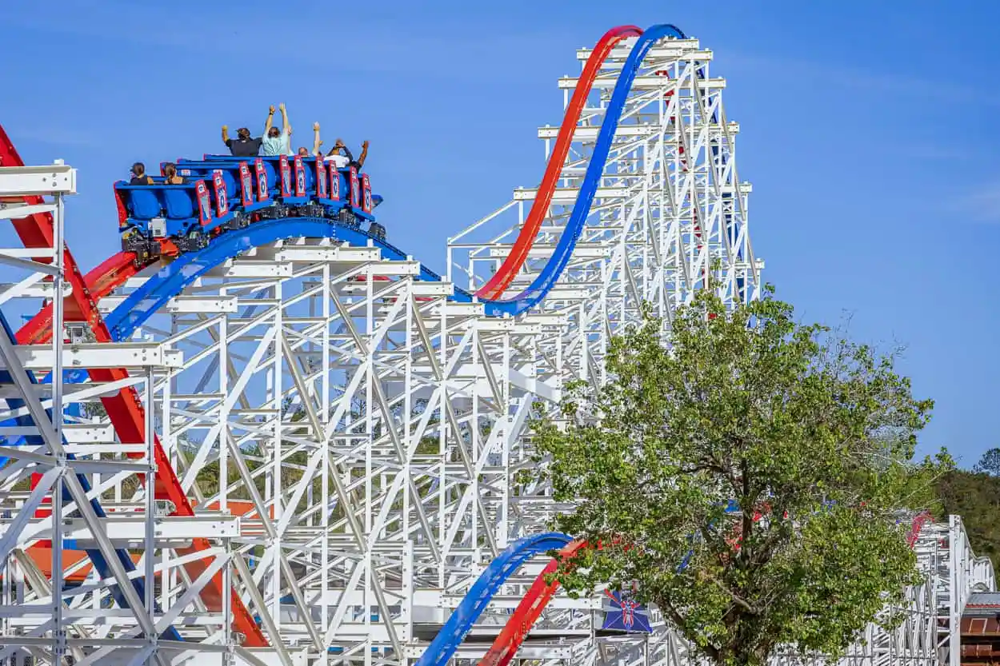

Bolliger & Mabillard, or B&M for short, is a rollercoaster manufacturing company based in Switzerland and was founded in 1988 by Walter Bolliger and Claude Mabillard. B&M invented the Floorless, Dive, and Inverted models, but their portfolio includes eleven different models. The most notable traits of B&M coasters that sets them apart from other manufacturers are their smoothness, innovated model concepts, and diversity in ride experiences. Their track style is also one of the most distinct in the coaster industry.

Intamin is a rollercoaster design and manufacturing in Liechtenstein, and has built rides in over 20 countries. They are best known for their steel rollercoasters, but they also manufacture wooden coasters. Intamin currently holds the world records for both the tallest and the fastest steel coasters in the world, and have broken their own record for each category at least twice. Even more impressive is that the top five tallest and fastest steel coasters in the world are all built by Intamin. They currently offer 29 steel rollercoaster models that range from family friendly to extreme thrill.

Rocky Mountain Coasters, also known as R.M.C. or Rocky Mountain Construction, is an American rollercoaster manufacturing company best known for the “hybrid coaster” model. The two most popular kinds of RMC hybrid coasters are I-Box and Topper Track. I-Box is the most common, and used to overhaul an existing wooden coaster by adding steel track and more extreme elements (including inversions) without completely demolishing the original ride. Topper track is used to preserve a wooden ride by renovating the track for a smoother ride and increased longevity.